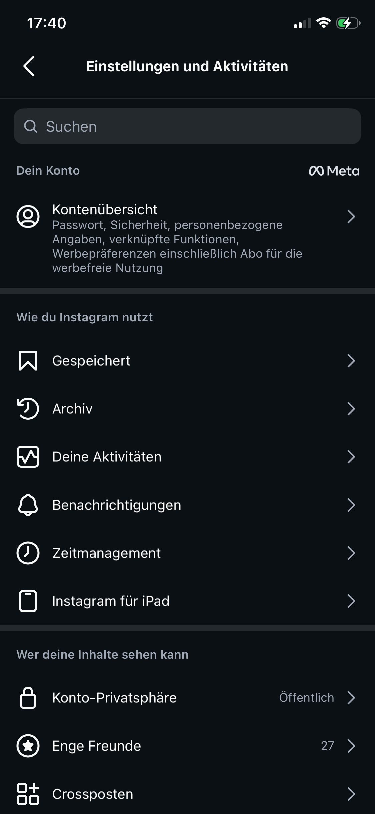
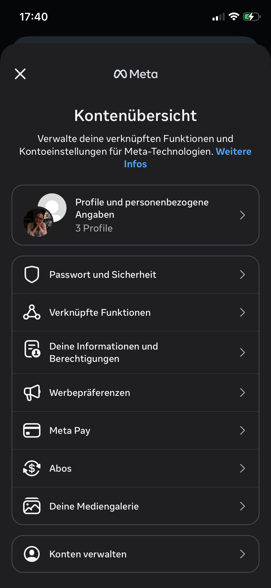
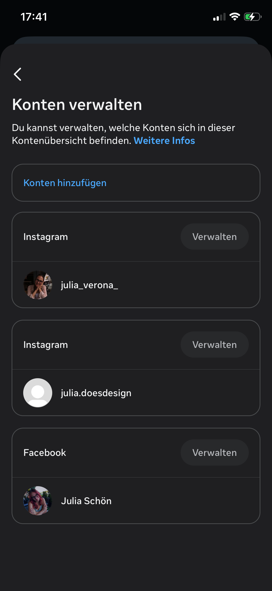
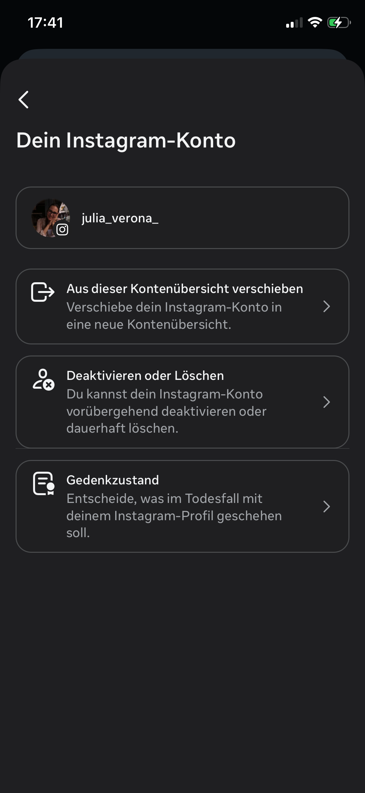
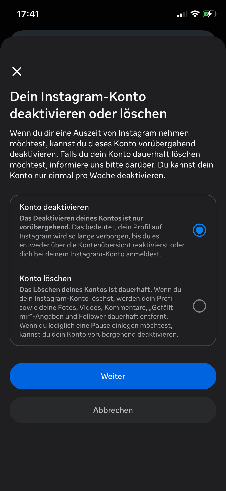
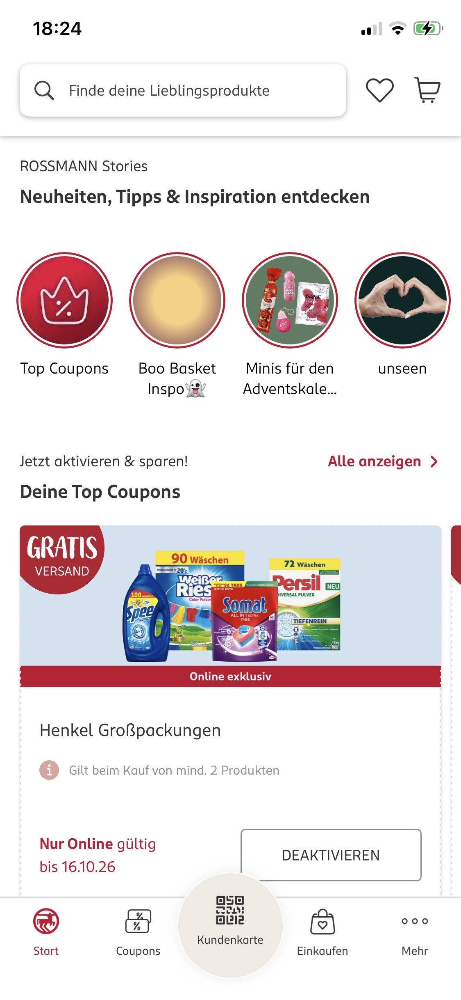
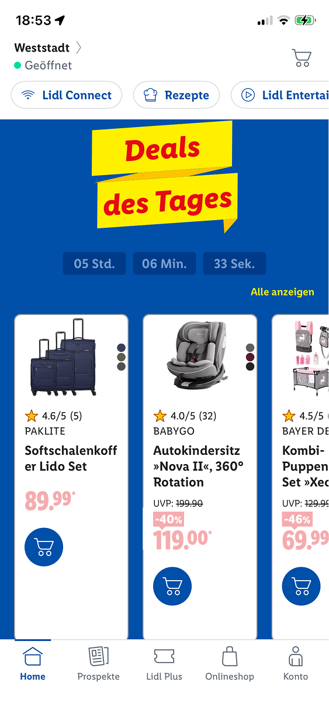
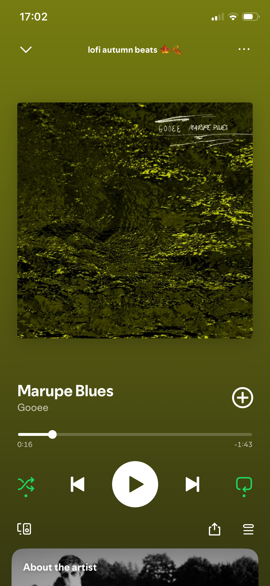
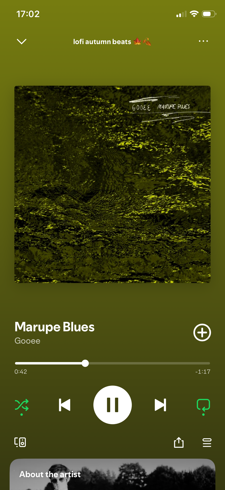

Julia, Ferdinand, Johann:
Brainstorming ideas for core concept. Setting up GitHub and FigJam structure and shared workspaces.
Structuring
the work ahead.
We set a 15 minute timer for coming up with ideas.
Ideas:
1 - Friedrichsau, looking for and recognizing different bird species ("Birding"), People who spend
all
their
time in front of screens and don't look around
2 - Wochenmarkt Münsterplatz, Eselsberg, communicating importance of farmers market in an age of
convenience,
sustainability,
strengthening local economy, interviewing buyers and sellers, collecting different statistics like
age
of
attendees, occupation, pricing, overall selection
Location ideas:
Illermündung, Friedrichsau, Kleine Lauterquelle, Donautal "Biotop", Blautalcenter, Lost Places
Activities:
Recognizing Birds, Trees, Insects, Wochenmarkt
Reading 01 through 04a, and 06.
Started work on lightning demos and set up a shared presentation file.
Looking for apps that could fit the criteria. I'm working on a 'learning product', Julia's working
on a
guide
demo.
Ferdinand and Wiktoria are working on answering the five and six questions from the script.
Possible learning app ideas:
- Blinkist: 15-min podcasts
- Brilliant.org: online lectures
- LinkedIn Learning
Decided on Blinkist for now:
Blinkist as an audio Podcast app costs its users attention in short, repeated fragments.
At it's core are short audio sessions (roughly 15 minutes),
which are supposed to give you the central ideas of a much longer book in a condensed form.
They are intentionally positioned as things to listen to while working, travelling, doing chores,
etc.
As far as cognitive load goes, the user still has to listen and understand the material.
As condensed books, the podcasts must necessarily remove some of the content of the original
works,
meaning not all arguments, examples, context and nuance from the original author are retained.
An additional aspect is user retention/gamification where there are daily personalized
recommendations
(algorithms).
Interestingly, in this way blinkist can capture previously quiet moments:
If a user would have previously spent 15 minutes on the train daydreaming, now their attention is
spent
on an audio podcast.
It teaches in a highly dynamic way where you can learn something pretty much
anywhere at any time due to the bite-sized nature of the podcasts and it being a phone app, instead
of
sitting
down
at a desk and reading a book.
- Residents of Ulm who want to buy their vegetables and other foods locally instead of in the
supermarket.
- Most people, especially younger generations, get their food, such as vegetables, dairy products,
and
meat,
from
the nearest supermarket.
- On the other hand, there are the farmers themselves who sell their products at these farmers'
markets.
- The shrinking number of customers and visitors at these markets is disadvantageous for the farmers
because
they
sell fewer products.
- This could lead to multiple stands closing because they earn less money from fewer customers.
- Buying food from local farmers can be more sustainable than getting it from the supermarket.
An app/website for mobile devices that works as a local map of Ulm, with various points of interest
representing
local farmers'
Examples include:
- Ulmer Wochenmarkt (Münsterplatz)
- Söflinger Wochenmarkt
- Wiblinger Wochenmarkt
- Wochenmarkt am Eselsberg
- Wochenmarkt am Weststadthaus
- Users are able to interact with the points of interest on the map.
Each market provides information about:
- Opening hours
- Assortment
- Number of customers/visitors per hour
- Locally photographed images showing what the different farmers' markets look like
The question is not quite answerable at the moment.
Our plan is to build a system containing:
- A map of Ulm with the different farmers' markets as points of interest
- Images showing the different markets
- Information about the markets, such as number of customers/visitors, opening hours, and
assortment
- Together, these elements will relate to each other and provide the consumer with a clean overview
of
the
farmers'
markets in Ulm containing everything they want to know.
- The screen contains a map with various points of interest representing the markets.
- The points of interest will be highlighted during opening hours.
The website contains information about:
- Opening hours
- Number of visitors/customers/clients
- Assortment
- Number of sales stands
A route planner leads to the nearest or selected farmers' market.
- When opening the website, the user is shown a map with the farmers' markets as points of
interest.
- The user can click on a market of their choice, which opens an interface containing images and all
the
necessary
information.
Type:
A friendly typeface for headlines and a sans-serif font for normal text.
Colour:
The map consists of green and white elements, complementing a natural and sustainable environment
because most
of
the farmers source their food naturally.
Red map markers indicate the locations of the different markets.
Motion:
If a market is open at a certain time, its marker will contain an animation indicating its opening
hours.
States:
Most of the elements work together, such as the map, images, and information about the farmers'
markets.
Craft:
We are trying to implement a good amount of attention to detail.
- We are building a website that contains information about the different farmers' markets in
Ulm.
- We are doing this to increase awareness of these markets, so people might buy from them again or
more
often
than
before.
- For everyone, but especially for the younger generation, who might not be familiar with local
farmers'
markets.
- We want to encourage younger people to buy food from local stands again.
- Across the different quarters of Ulm.
- We want to build a map containing different points of interest across Ulm.
These include, for example:
- Ulmer Wochenmarkt (Münsterplatz)
- Söflinger Wochenmarkt
- Wiblinger Wochenmarkt
- Wochenmarkt am Eselsberg
- Wochenmarkt am Weststadthaus
- If there is a rise in customers at local farmers' markets.
- The ideal concept of our website is that it influences residents of Ulm to start buying their food
from local
sellers.
We have time until January.
- Not gaining enough information about the different markets.
- Not finding enough people to interview.
- The website does not gain enough recognition among the people.
Not gaining enough information about the different markets.
Not finding enough people to interview.
The website does not gain enough recognition among the people.
I'm working on a guide demo and the presentation.
The app I've chosen is called kulturclub ulm.
It provides an overview of cultural activities and events in Ulm, including important information
such
as date,
time
and location.
Its purpose is to make it easier for users to discover cultural activities in Ulm and decide which
events they
would
like to attend.
Julia overhauled the diary styling, with slight changes by me.
We're considering different apporaches to the diary in the future to make it simpler to write
entries, maybe by automatically
generating the HTML from individual markdown files.
We are working on updating and preparing the interview questions, as we are planning to start
interviewing tomorrow.
We are also looking to practice interviews with another group.
Ferdinand transcribed his interview with a young adult (a friend of his) who barely or never
visits the Farmers Market in Ulm. As we are trying to interview different people such as the sellers,
the regular visitors and (young) people that never visit the Farmers Markets, the interviewed person
fits into the third category perfectly. As we progress in the interview we find out more about the reasons
why young people don't visit the Farmers Market and what they think about them in a positive and negative way.
Across the nterview there are some general questions in the beginning. After that follows questions about costumers,
regional versus imported procucts (Farmers Market vs. Supermarket) and questions about the digital implementation of
an app or website about the farmers market. To round it all up there are a few concluding questions.
The interview is in german language and was recorded on the 15th of October 2026 (15.10.2026).
Coming up next is the transcribed interview it self in it's full length. (23 minutes)
Begrüßung:
Hallo, wir sind Studenten an der THU und wir arbeiten zusammen an einem Projekt über den Wochenmarkt.
Wir würden gerne ein paar Interviewfragen stellen. Es ist insgesamt ein Fragenkatalog von c.a 15 Fragen,
über verschiedene Themen, wie Beispielsweise die Kundschaft, regionale Ware und wie man dies in einer Website
oder App umsetzen kann um das Wochenmarktangebot möglicherweise attraktiver für Sie zu gestalten. Wir suchen
gerade auch junge Personen raus, die vielleicht den Markt nicht regelmäßig besuchen oder auch gar nicht und
wollen dazu einfach mal ein paar Fragen stellen.
Allgeimeine Fragen:
F: Ich beginne erst mal ganz Allgemein, und zwar wer sind Sie? Und wie alt sind Sie?
A: „Ich heiße Nicole und bin 21 Jahre alt.“
F: Und wo kommen Sie her?
A: „Ich komme vom Bodensee.“
F: Und aktuell, wo wohnen Sie ungefähr aktuell?
A: „In Ulm.“
F: (...) Wo kaufen Sie denn Ihre Lebensmittel ein, wenn Sie zum Beispiel einen Wocheneinkauf machen?
Und wieso kaufen Sie sie dort ein?
A: „Ja meistens immer bei EDEKA oder REWE, weil man da relativ einfach hinkommt,
auch mit der Bahn und es ist nicht so weit. (...) Und (...)
ja die Angebote sind gut (...) ich weiß nicht. (...)“
F: Gerade im Bezug darauf. Besuchen Sie regelmäßig, ab und zu, selten oder gar nicht den Wochenmarkt?
Gerade hier in Ulm oder allgemein vielleicht auch andere Standorte. Es geht jetzt allgemein einfach um
das Thema Wochenmarkt. Und wieso tun Sie dies beziehungsweise tun Sie dies nicht?
A: „Also manchmal läuft man halt durch und guckt was es so gibt,
aber ich habe persönlich jetzt noch nie etwas da gekauft. (...)“
F: Also Sie sind dann regelmäßig auf der Fläche vom Markt?
Gefällt Ihnen dann beispielsweise auch die Gesamtatmosphäre auf dem Markt?
Also es ist ja auch ein potenzieller Hot-Spot für viele Menschen, die jetzt einfach nur dort hin gehen
um eine gute Zeit zu haben und jetzt nicht unbedingt da ihren Wocheneinkauf machen.
A: „Also ich mag die Atmosphäre nicht so, weil es mir einfach zu überfüllt ist manchmal.
(...) Aber manchmal ist es auch interessant zu sehen, was die Leute so anbieten, auch an selbst gemachten Sachen.“
F: Ja auf jeden Fall. Ja, wissen Sie zum Beispiel wo und welcher Markt sich in Ulm befindet
und wann die Öffnungszeiten oder an welchen Wochen-Tagen die verschiedenen Märkte sind?
A: „Ich glaube in der Innenstadt gibt‘s immer Mittwochs und Samstags einen aber sonst weiß ich von nichts. (...)“
F: Ja genau. Also, in der Innenstadt gibt es den Wochenmarkt auf dem Münsterplatz.
Der ist immer Mittwochs und Samstags von 6-13Uhr. Und dann gibt es noch einzelne Standorte,
gerade in unterschiedlichen Stadtteilen von Ulm, welche dann auch an einzelnen Wochentagen sind.
Allerdings meist am Nachmittag geöffnet sind. Ja, welche Werte verbinden Sie denn zum Beispiel mit einem Wochenmarkt?
Also so allgemein gefasst, was fällt Ihnen dazu ein, wenn Sie an einen Wochenmarkt denken?
A: „Ähm, ich nehme an es ist nachhaltiger. (...) Und wahrscheinlich auch besser von der Qualität.
(...) Weil die Sachen auch meist selbst hergestellt sind, nehme ich zumindest an. (...)
Und diese halt eher in kleineren Mengen produziert werden, als jetzt vom Supermarkt oder von einer Eigenmarke oder so...“
Fragen zur Kundschaft:
F: Okay, alles klar. Ja dann kommen wir auch jetzt schon zum nächsten Thema, und zwar das Thema Kundschaft.
Die erste Frage dazu ist: Warum denken Sie denn gerade, das erwachsene Menschen oder eher ältere Menschen
auf dem Wochenmarkt einkaufen, im Vergleich zu den jüngeren Menschen? Heißt junge Erwachsene, wie Studenten,
Azubis oder allgemein Jugendliche und Kinder. Was denken Sie, hat dies für einen Zusammenhang?
A: „Ich denke mal, dass es damals eher die Norm war auf den Wochenmarkt zu gehen, anstatt jetzt in den Supermarkt.
Und ich meine Studenten und jüngere Leute haben jetzt auch nicht wirklich das Geld sich dort die Sachen leisten zu können.
Weil die Sachen dort schon zum Teil teurer sind als im Supermarkt. (...)“
F: Ja okay. Ja, würden Sie sich deswegen, weil ja aktuell oder allgemein eher ältere Personen im Vergleich
zu Ihnen auf dem Wochenmarkt sind, fühlen Sie sich dann wie eine Art Minderheit im Vergleich zum durchschnittlichen Alter?
Fühlen Sie sich dadurch vielleicht sogar schon unwohl, weil Sie jetzt nicht viele Personen, die Ihnen ähnlich sind dort antreffen.
Hat dies ein Einfluss auf Sie?
A: „Nein, tatsächlich nicht, also mich stört das nicht, wenn ich jetzt eine von wenigen jungeren Leuten dort bin. (...)“
F: Denken Sie das geht anderen jüngeren Menschen auch so, dass Sie das eigentlich relativ irrelevant finden?
A: „Ich glaube schon, dass das viele sehr irrelevant finden. (...)“
Fragen zu regionaler vs. importierter Ware (Wochenmarkt vs. Supermarkt)
F: Ja okay, dann kommen wir jetzt zum nächsten Thema, und zwar geht es dabei um Regionalität der Ware.
Gerade im Vergleich zur importierten Ware, welche man im Supermarkt findet. Was unterscheidet denn so allgemein
die Einkaufs-Atmosphäre auf dem Wochenmarkt? Wenn Sie jetzt gerade daran denken, wie diese wäre, im Vergleich zu Supermärkten,
wie unterscheidet sich das für Sie?
A: „Na ja zum einen Teil ist es (der Wochenmarkt) eben draußen und man hat viel persönlichen Kontakt zu den Leuten,
die es eben auch verkaufen, weil man deswegen ja gerade auch das abkaufen kann. (...) Es fühlt sich irgendwie altmodischer an,
als jetzt in einem Supermarkt einzukaufen zu gehen, wo man halt reinläuft, die Sachen in den Einkaufskorb schmeißt und
dann am Ende abscannt und bezahlt. Da hat man ja eigentlich auch nur Kontakt zu den Kassieren und nicht zu den Leuten,
die diese Ware anbieten.“
F: Also würden Sie dann damit auch sagen, dass Sie finden, dass der Einkauf auf dem Wochenmarkt um einiges persönlicher
und intimer ist? („Ja“) Und vielleicht auch, dass eher so eine Art Nähe zu den Lebensmitteln haben oder zu den Verkäufern,
als jetzt im Supermarkt? („Ja“) Wie würden Sie dann den Einkauf im Supermarkt noch beschreiben?
A: „Es fühlt sich halt an wie etwas, was man halt machen muss weil der Kühlschrank leer ist und der Wochenmarkt wirkt eher
wie so eine Art Aktivität, die man aktiv macht und mit Menschen interagiert.“
F: Würden Sie dann auch behaupten, dass gerade in den Supermärkten, der größte Unterschied ist, dass die Atmosphäre
viel anonymer ist? Weil dort ja jeder nur für sich selbst dort ist um sich selbst zu versorgen? („Ja würde ich sagen.“)
Wie wichtig ist es denn für Sie zu wissen woher Ihre Lebensmittel stammen und wo beziehungsweise wie sie produziert wurden?
A: „Also bei tierischen Lebensmitteln finde ich es schon sehr wichtig zu wissen woher sie kommen und wie sie produziert wurden.
Zum Beispiel, dass man eben auf das Tierwohl achtet. Beispielsweise bei Eiern, dass man eben die Eier nimmt
wo das Siegel drauf steht, dass eben keine Küken getötet werden. Und beim Obst ist regional natürlich auch immer besser.“
F: Hätten Sie dann gerne vor Augen, wie der Bauernhof zum Beispiel aussieht, woher die Eier kommen, woher das Gemüse kommt,
woher auch Fleisch und Käse kommen. Würde dies Ihnen dann in einer gewissen Art und Weise... Würden Sie das für wichtig halten?
A: „Ja es wäre wichtig aber ich denke ich glaube es ist schwer umsetzbar.“
F: Also die Sache ist wenn man die Lebensmittel lokal kauft kann man rheintheoretisch immer einen Verkäufer fragen,
was es damit auf sich hat. Weil es sind ja die direkten Produzenten davon. Denken Sie dann auch dass so etwas einem
mit Hilfe einer App oder Website näher gebracht werden sollte, damit man Bescheid weiß? Oder würden Sie eher auf
dem Wochenmarkt den Verkäufer selbst fragen wollen?
A: „Ich meine, wenn man jetzt nicht wirklich Lust hat mit Leuten zu interagieren, dann könnte so eine App schon hilfreich sein.
Aber die Frage ist ob man so eine braucht, wenn man direkt fragen könnte.“
F: Sagen Sie dass gerade für junge Leute die beispielweiße schüchtern sind, ob es für diese besser, wenn sie sich online
oder über eine App informieren könnten, was lokal verkauft wird? (Ja) Resultierend von der Ware, welche verkauft wird.
Was wäre denn notwendig, damit Sie den Wochenmarkt als Hauptquelle für frische Lebensmittel wie Gemüse, Obst,
etc nutzen würden? Was wäre dafür notwendig?
A: „Das die Preise nicht so hoch sind.“
F: Gibt es noch andere Faktoren bis auf den Preis?
A: „Ich sage nicht wirklich, weil ich denke die Preise sind der einzige Faktor der einen davon abhält dort einkaufen zu gehen.“
F: Aber würden Sie eventuell auch sagen, dass das Angebot generell etwas „zu altmodisch“ dargestellt wird?
Also würden Sie behaupten, dass die Wochenmärkte so eine art update benötigen würden,
damit sie auch wieder die jüngeren Menschen ansprechen würden.
A: „Ich meine auf allen Wochenmärkten werden ja nicht so stark verarbeitete Lebensmittel verkauft und man kann auch aus den Sachen,
die man findet alles machen, also so Grundzutaten.“
Fragen zur digitalen Darstellung einer App bzw. Website über den Wochenmarkt:
F: Okay dann komme ich jetzt zum vor letzen Thema: Ich hatte ja erwähnt, dass wir an einem Produkt arbeiten
für den Wochenmarkt. Dabei wollen wir nämlich eine Art App beziehungsweise Website bauen, welche das
Besuchererlebnis potenziell vereinfacht oder dass die Besucher daraus auch etwas lernen können.
Gerade über verschiedenste Informationen wie die verschiedenen Angebote, woher die Lebensmittel kommen und die Öffnungszeiten.
Zum Beispiel eine interaktive Karte, auf welcher man sehen kann, wo welcher Markt ist und wann die Öffnungszeiten sind.
Dazu würde ich gerne allgemein noch fragen, wie informieren Sie sich über verschiedene Angebote in Ihrer Stadt?
Es muss sich jetzt nicht explizit auf den Wochenmarkt beziehen und kann alles mögliche sein.
Es können auch verschiedenste Einkaufsgeschäfte, Cafés oder verschiedene Events wie Konzerte sein.
A: „Meistens erfährt man ja eigentlich alles durch das Internet oder Social Media. Da die Cafés ja auch meistens
ihr eigenes Marketing betreiben. Darauf aufmerksam machen, was Sie gerade für Angebote haben.“
F: Beziehen Sie Informationen auch aus anderen Informationsquellen? Was fällt ihnen potenziell dafür ein?
Flyer oder Zeitschriften welche Sie in der Stadt sehen?
A: „Potenziell sieht man eben draußen an den Cafés diese Tafeln oder generell bei Shops stehen ja manchmal so Tafeln,
was es für bestimmte Angebote gibt, gerade dann wenn man vorbeiläuft.“
F: Würden Sie dann dem entsprechend auch sagen, dass vielleicht (gerade wo Sie gesagt haben, über Internet und soziale Medien)
Themen wie der Wochenmarkt relevanter auf Sozialen Medien gemacht werden sollten? Damit es einfach ein
größerer und jüngeres Publikum, welches viel auf Social Media unterwegs ist anspricht.
A: „Ich denke schon, dass es etwas bringen könnte.“
F: Was denken Sie denn was würde dann darauf hin passieren? Wie würde es das Verhalten oder die Intension von
Jugendlichen ändern oder deren Einstellung zum Wochenmarkt?
A: „Die Einstellung wäre dann wahrscheinlich, dass es nicht mehr so ein Ding von älteren Leuten wäre,
die jeden Mittwoch und Samstag dahin gehen, sondern ein Angebot, welches dann jeder nutzen kann.
Das haben Sie dann beispielweiße übers Internet erfahren und nicht einfach spontan.“
F: Ja, wenn wir jetzt gerade von dieser sogenannten Website oder App sprechen, wie könnte die digitale Darstellung
in Ihren Augen aussehen, was wäre ihnen dabei wichtig? Damit Sie den Wochenmarkt für attraktiver,
einfacher verständlich und intuitiver halten?
A: „Eventuell eine Karte vom Wochenmarkt, wo man eben auf die einzelnen Stände klicken könnte.
Und dann eben mit den passenden Informationen über den Händler oder die Angebote generell
und über die Herstellung von den Produkten. Bestenfalls vielleicht noch die Preise dazu.“
F: Sonst noch andere Informationen, wie zum Beispiel allgemeine Besucherzahlen vom Markt
oder alles andere mögliche?
A: „Vielleicht eine Live-Abschätzung, wie voll es aktuell ist, wie viele Besucher es gerade gibt
und generell immer so wann circa die Stoßzeiten sind, also wann am meisten Leute kommen.“
F: Ungefähr wie bei Google, wenn man dort diese Statistik hat, wann am meisten besucht wird? (Ja)
Sonst noch andere Möglichkeiten Ihnen das Markt-Erlebniss näher zu bringen? Das Sie daraus etwas beziehen oder lernen können?
A: „Vielleicht generell mehr Marketing und soziale Präsenz in den Medien.“
F: Also etwas stärker in den Medien vertreten sein, durch Algorithmen, damit die Nachricht letztendlich
auch die Person erreicht?
A: „Ja, und das eben auch mehr davon überhaupt wissen.“
F: Es dann so zu gestalten, dass es für jeden beziehungsweise die meisten Menschen verständlich oder attraktiv ist? („Ja“)
Abschließene Fragen:
F: Ja dann komme ich jetzt noch zu zwei abschließenden Fragen, und zwar haben Sie irgendwelche Pläne für die Zukunft,
über welche Sie berichten wollen? Es kann alles sein, zum Beispiel in welche Richtung Sie gehen möchte
(in Richtung Karriere)?
A: „Ich würde später gerne in die Krebsforschung gehen.“
F: Ja verstehe. Dann würde ich noch gerne Fragen, klar Sie haben ja gemeint, dass Sie so gut wie gar nicht auf dem
Wochenmarkt einkaufen. Aber was stört Sie denn oder würde Sie stören an dem Einkauf auf dem Wochenmarkt?
A: „Ja zum einen, dass es einfach häufig zu teuer ist, und zum anderen, dass ich nicht immer Bargeld dabei habe.
Da das bargeldlose bezahlen dort auch noch nicht so wirklich etabliert ist.
Ich möchte nämlich nicht die ganze Zeit 50 oder 100 Euro Bar die ganze Zeit mit mir rum tragen.“
F: Würden Sie dem Markt somit ans Herz legen, dass mehr Kartenzahlung dort vertreten ist?
Oder dass es eher etwas moderner ist und nicht auf die aktuelle eher traditionelle Art, damit es angepasst
ist für die Jugend? („Ja, definitiv“) Was denken Sie wie könnte man so etwas dann umsetzen,
wenn es nicht über den Markt und deren Stände selbst läuft? Wie könnte man diese Interessen welche
Sie am Wochenmarkt dann hätten digital umsetzen?
A: „Das man online bezahlen kann mit einem neuen Zahlungssystem wie Paypal oder einem eigenen.“
F: Ja das stößt jetzt leider leicht von unserem Themengebiet ab, aber denken Sie, dass man sonst als
Kompromiss online hinschreiben könnte, welche Zahlungsarten an welchem Stand verfügbar sind?
Damit sich die Menschen auch, bevor Sie einkaufen gehen sich darauf vorbereiten können?
A: „Ja aber theoretisch ist alles, was ich bisher auf dem Wochenmarkt gesehen habe bar bis jetzt.“
F: Gegenfrage zu der Frage von gerade eben. Was finden Sie gut am Wochenmarkt, was würden Sie selbst nicht anders
machen? Oder was führt auch dazu, dass Sie eine positive Verbindung mit dem Wochenmarkt haben?
A: „Also die Qualität von den Produkten sieht auf jeden Fall gut aus, vieles sieht handgemacht aus.
Ich mag einfach dieses, dass es halt, qualitativ hochwertiger wirkt als Lebensmittel aus dem Supermarkt
und dass man den Händler, beziehungsweise den Produzenten antreffen kann. Dadurch hat man auch mehr
Vertrauen in die Qualität als im Supermarkt.“
F: Finden Sie auch toll, dass es ein Treffpunkt für viele Menschen ist? Oder ist das für sie eher irrelevant?
A: „Für mich persönlich ist es eher irrelevant.“
F: Aber denken Sie als Gruppe zum Beispiel, wenn Sie mit zwei Freund/-innen unterwegs sind, dass auch als
Art Platz dienen kann auf welchem man sich aufhalten kann, ohne jetzt viel zu kaufen? Sondern einfach
da zu sein um eine gute Zeit zu haben. Denken Sie das wäre gerade auch für das junge Publikum eine Option?
A: „Ich meine es ist bestimmt interessant dort durch zu laufen mit Freunden und sich an zu sehen,
was es dort für Angebote gibt. Aber ich glaube, jede Woche ist jetzt nicht all zu interessant."
F: Ja final würde ich dann gerne noch von ihnen wissen: Wenn Sie jetzt die Punkte, welche Sie angesprochen haben,
gerade im Bezug auf gute Qualität und Nachhaltigkeit, regionale Produkte etc. vergleichen mit Produkt aus dem Supermarkt.
Da sind die Produkte vom Wochenmarkt ja mehr oder weniger das Non-Plus-Ultra. Wären Sie dann auch bereit einen gewissen
Aufpreis zu zahlen? Es geht dabei nämlich nicht nur um das Produkt selbst, sondern um alle mögliche kleinen Faktoren,
welche dabei noch mit rein spielen. Wären Si deswegen dann bereit den Aufpreis zu zahlen und wenn Ja warum und wenn Nein warum?
A: „Also theoretisch wäre ich bereit dazu für eine bessere Qualität mehr Geld auszugeben aber gerade
als junge Person oder Student/-in hat man eben nicht so viel Geld. Deswegen muss man häufig zu günstigeren
Alternativen zurückgreifen.“
F: Alles klar, dann vielen Dank für das Interview, ich wünsche Ihnen noch einen schönen Tag...
Wichtigstes Zitat:
„Ich denke mal, dass es damals eher die Norm war auf den Wochenmarkt zu gehen, anstatt jetzt in den Supermarkt.
Und ich meine Studenten und jüngere Leute haben jetzt auch nicht wirklich das Geld sich dort die Sachen leisten zu können.
Weil die Sachen dort schon zum Teil teurer sind als im Supermarkt. (...)“
Wiktoria transcribed the interviews with the market visitors. For this, Johann and Wiktoria went to the weekly market at
Eselsberg on 15 October 2026, where they interviewed a total of three visitors. In addition, Julia interviewed a young person who
had never shopped at a weekly market before.
The interviews are in german language and were recorded on the 15th of October 2026.
Interview: Wiktoria und Besucherin des Wochenmarkts (Eselsberg, 15.10.26)
Einleitung: Hallo, wir sind Studenten an der THU und wir arbeiten zusammen an einem Projekt über den Wochenmarkt.
Wir würden dafür gerne Interviews mit den Besuchern der Wochenmärkte führen. Hierbei geht es um Themen, wie beispielsweise
die Kundschaft, regionale Ware und wie man dies in einer Website oder App umsetzen kann, um das Wochenmarktangebot möglicherweise
attraktiver für Sie zu gestalten.
Wiktoria: Dann zur ersten Frage: Was hat sie denn heute auf den Wochenmarkt so geführt?
Besucherin: Normalerweise gehe ich am Samstag aber, genau ich gehe übers Wochenende weg und deshalb bin ich jetzt hier.
Wiktoria: Also besuchen Sie den Wochenmarkt dann auch öfters, oder?
Besucherin: Ja, also eigentlich immer genau einmal die Woche, genau.
Wiktoria: Und seit wann machen Sie das schon so?
Besucherin: Hm, naja, seit wir hier wohnen, also so die letzten genau 25 Jahre oder so, ja.
Wiktoria: Und was kaufen Sie dann so ein auf dem Wochenmarkt?
Besucherin: Immer nur Bestimmtes dann, also zum Beispiel die Äpfel und Birnen oder Obst von der Saison wo hier angebaut wird;
die anderen Sachen kaufe ich tatsächlich im Supermarkt. Dann Wurst kaufe ich auch hauptsächlich auf dem Markt,
weil das auch regionale Anbieter sind; und ja manchmal Gemüse, genau, aber das ist so das hauptsächliche; und Eier (…), genau.
Wiktoria: Also schon eher so ein gezielter Einkauf (…)?
Besucherin: Genau, es gibt bestimmte Sachen die kaufe ich auf dem Markt und die anderen kaufe ich dann im Supermark
Wiktoria: (…) was ist so der Grund, warum Sie diese hier einkaufen und nicht auch im Supermarkt?
Besucherin: Eben, weil es regional ist, weil es von den Leuten hier ist und weil es anders schmeckt, genau, also ich find's schmeckt besser bestimmte Sachen. Genau, die man hier kauft.
Wiktoria: Wie sieht denn so ein normaler Ablauf bei ihnen aus wenn sie hier sind auf dem Markt? (…)
vielleicht können sie uns durch das letzte Mal einfach durchlaufen, als sie zum Markt gegangen sind? Also wie war da so der Ablauf?
Besucherin: (…) Ja ich weiß wo meine Stände sind und dann kaufe ich immer erst die Sachen, die ich unten in meinen Trolley reintun kann,
also die festen Sachen so wie Kartoffel oder sonst was, genau; und dann ja laufe ich durch und ich weiß, welche Sachen oben dann draufkommen;
die Trauben kommen zum Schluss, deshalb werden die zum Schluss einkauft. Also es hat schon ein System, wie ich einkaufe.
Wiktoria: Also Sie wissen schon im Voraus was sie kaufen wollen und Sie wissen dann auch schon wo das alles zu finden ist?
Besucherin: Ja ja, genau. Ich habe meine Stände und dann genau, gehe die ab.
Wiktoria: Gab es zum Beispiel auch bei dem heutigen Besuch etwas, was so besonders gut gelaufen ist oder nicht so gut.
Besucherin: Normal, alles normal. Genau, also ich denke auf dem Markt muss man sich auf längere Wartezeit einstellen, aber dafür
(genau) wird man eben auch persönlich bedient, also ich glaube das muss man einfach mit einberechnen. Mein Mann zum Beispiel geht nicht gerne auf den Markt,
aber ich gehe gerne, also ich glaub es ist so Lieblingssache.
Wiktoria: Und was gefällt Ihnen dann so an dem Einkauf hier besonders?
Besucherin: Naja gefallen; (…) ich brauche bestimmte Sachen und wie gesagt wenn man die regionalen unterstützen will und was man auch dazu sagen muss
wenn man das Geld dazu hat; also es gab auch Zeiten, wo ich nicht so viel verdient hab, da konnte ich nicht so viel auf dem Markt einkaufen; aber ich will
ja eigentlich die Bauern und die Leute hier unterstützen und nicht die in Spanien oder so nh? Wobei Mandarinen jetzt auch von Spanien kaufe, wenn ich denke die wachsen halt dort.
Aber hat einfach nur so bestimmte Gründe, warum ich die Sachen hier einkaufe. Genau, aber spielen verschiedene Faktoren eine Rolle, weil hier ist halt oft teurer, aber dafür ist halt dann regional und von hier.
Wiktoria: Wären das dann, also der Preis und auch die Wartezeiten, wären das dann vielleicht Ansätze, wo man das verbessern könnte für Sie?
Besucherin: Naja, wie wollen Sie das verbessern, wenn die Bauern hier auch gut verdienen wollen und gut leben wollen, nh? Und wir auch,
wenn wir zur Arbeit gehen auch gut leben wollen, dann denke ich kann man es nicht günstiger machen, sondern im Gegenteil: ich denke,
dass man die Sachen im Supermarkt, damit Lebensmittel wieder wertvoller werden, weil es Lebensmittel sind und nicht irgendwie ein Konsumding,
was man nur billig kauft; also ich würde eher sagen die anderen müssten den Preis steigern damit alle die anbauen auch wieder gut leben können.
Und warum gibt es Erntehelfer, die aus Polen kommen oder in Spanien die Marokkaner, nh? Weil die halt nicht so viel verdienen, die sind darauf angewiesen,
aber wenn alle richtig verdienen würden, dann müssten wir insgesamt das anheben, denke ich. Dann wäre es gerechter für alle; aber es geht leider nicht immer gerecht zu.
Wiktoria: (…) Dann hätten wir noch die Frage, wie Sie Atmosphäre hier so wahrnehmen, also vielleicht auch so im Vergleich
, wenn Sie sagen Sie kaufen mal hier und mal im Supermarkt ein?
Besucherin: Also der hier ist natürlich immer kleiner geworden; also der war ja früher größer und kann ich auch verstehen,
ich mein für die Leute muss es sich lohnen; wenn nicht so viele Kunden kommen, kann ich auch verstehen, wenn die sagen „ne wir können hier nicht hierher stehen“;
das ist schon klar und wie gesagt ich gehe sonst auch mal Samstag morgens und in Söflingen manchmal Freitag mittags, aber normalerweise Samstag morgens in die Stadt rein.
Ich finde es eigentlich gut mit diesem Stadtteilmarkt, aber ich glaube es lässt sich wahrscheinlich nicht so durchsetzen. (…) aber was dann hier wieder geschickt ist:
man muss hier nicht so lange warten wie Samstag morgens (…)
Wiktoria: Treffen Sie dann vielleicht auch so bekannte Leute von Ihnen, so dass Sie ja auch so viel sozialer mit den Leuten also umgehen auf dem Markt?
Besucherin: Das kann sein, aber deshalb also das genau soziale Kontakte sind eher, dass es dann länger dauert (…) aber natürlich, wenn mich jemand trifft,
klar ist das auf dem Markt; aber das ist Quatsch ich genauso im Supermarkt, wenn ich jemanden treffe, also das ist jetzt unabhängig vom Markt.
Wiktoria: Dann noch konkret zum Projekt, also wir wollen natürlich bisschen bewirken, dass die Leute mehr so dahin gehen und das vielleicht so ein bisschen attraktiver machen;
und vielleicht was fällt Ihnen da ein, wie könnte irgendwie eine App oder sagen wir mal eine Website den Besuch erleichtern? Also zum Beispiel eine Kartenansicht oder sowas,
wo man die Stände sieht; haben Sie da vielleicht irgendeine Vorstellung?
Besucherin: (…) ich glaube es ist einfach eine Typsache und ob man halt, nh? Die Bauern hier unterstützen will und kann oder nicht; (…)
also ich wüsste jetzt nicht wie man sowas bewerben könnte oder was da geschickt wäre oder so; also ich würde halt wirklich sagen,
dass es eben regional ist, dass man direkt die Leute hier unterstützt.(…)
Besucherin: Oder dass man mittlerweile auch bei allen, das macht vielleicht auch was aus, mit Karte zum Beispiel zahlen kann oder so;
also, dass sie mittlerweile auch die meisten da drauf eingestellt sind. (…) Weil es das ja auch attraktiv macht (…) gerade eben habe ich wen getroffenen im Supermarkt,
der hatte kein Geld mehr dabei und wollte den Einkaufswagen, genau wenn du nur noch digital bist, (…) dass es eben genau für die Bauern hier ist und ja; (…) ich find einfach Dinge besser schmecken,
manche nicht alle, aber manche; tatsächlich bei Äpfeln, da schwöre ich drauf.
(Interview Ende)
Wichtigstes Zitat:
"Eben, weil es regional ist, weil es von den Leuten hier ist und weil es anders schmeckt, genau, also ich find's schmeckt besser bestimmte Sachen. Genau, die man hier kauft"
Interview: Johann und Besucherin des Wochenmarktes (Eselsberg, 15.10.26)
Einleitung: Hallo, wir sind Studenten an der THU und wir arbeiten zusammen an einem Projekt über den Wochenmarkt.
Wir würden dafür gerne Interviews mit den Besuchern der Wochenmärkte führen. Hierbei geht es um Themen, wie beispielsweise die Kundschaft,
regionale Ware und wie man dies in einer Website oder App umsetzen kann, um das Wochenmarktangebot möglicherweise attraktiver für Sie zu gestalten.
Johann: (…) Würden wir direkt mal fragen, nämlich was hat Sie heute auf den Wochenmarkt hingeführt?
Besucherin: (…) der Einkauf hier, weil man hier speziell auf dem Einkauf sehr gut biologisch einkaufen kann (…)
und weil es nicht verpackt ist und man es einfach mitnehmen kann also (…) der ganz normale Einkauf eben.
Johann: Ist biologisch für sie wichtig?
Besucherin: Ja das finde ich (…) eben sehr gut es ist hier zum Beispiel der Käseladen, es ist der Metzger, es ist hier der Eierstand.
(…) Fast alle Stände sind hier biologisch und (…) das finde ich einfach wichtig, so wenig Pestizide wie möglich zu verzehren, mitzuverzehren.
Johann: Also kaufen sie dann auch regelmäßig hier ein?
Besucherin: Ich kaufe regelmäßig hier ein, weil ich hier am Eselsberg wohne. (…) Ja ansonsten es gibt ja fünferlei Märkte in Ulm mindestens,
also da findet jeder seinen Teil; aber man will nicht immer in die Stadt runterfahren Mittwoch und Samstag oder Freitag nach Blaustein raus. (…) ich bin ein großer Markteinkäufer.
Johann: Können Sie uns vielleicht mal durch Ihren letzten Wochenmarkt-Besuch einfach durchführen, wie der so abgelaufen ist (…)
also das letzte Mal, als Sie auf dem Wochenmarkt waren; einfach den Tagesauflauf.
Besucherin: (hier gibt es) hier gibt es ja nur ganz wenige Stände da ist oben der biologische Käsestand bei dem ich regelmäßig Einkauf,
der Eierstand, der Gemüsestand und heute kein Fleisch aber ein anderes Mal wieder; also es ist ganz schnell hier gibt es ja ganz wenig Stände.
Johann: Ja, verstehe. Wie haben Sie sich dann dafür entschieden, an welchem Stand sie heute was einkaufen?
Besucherin: Ich habe ja an den 3 Ständen, die ich grad gesagt hab, eingekauft beim Käsestand beim Eierstand und beim Gemüsestand.
Johann: (…) hat heute alles gut funktioniert oder gab es irgendwelche Probleme?
Besucherin: Nein, es gibt hier keine Probleme, weil ich weiß, was ich will, und dann gibt es auch kein Problem und wenn es was nicht hat, disponiere ich um und alles einfach ist.
Johann: Sehr zielstrebig also; Sie kommen praktisch schon mit den Produkten an, die Sie haben wollen?
Besucherin: (…) ich komme schon im Kopf mit den Dingen her, die ich heute für das Wochenende oder überhaupt noch brauche, ja.
Johann: Okay, was unterscheidet für Sie der Einkauf hier halt zum Supermarkt also warum gerade den Wochenmarkt und nicht einfach dann Rewe zum Beispiel?
Besucherin: ja weil das, weil es eben aus der Gegend ist und weil es wie gesagt biologisch ist hier auf dem Markt speziell;
weil es frischer ist, weil es nicht von Norddeutschland kommt; sondern viele Dinge hier selbst angebaut (sind).
Johann: Verstehe. Und dann wenn es so lokal ist, ist Ihnen dann auch so ein bisschen sag ich mal der soziale Aspekt wichtig?
Also, dass sie die Leute hier irgendwie kennen?
Besucherin: der Markt ist hier sehr wenig besucht von daher trifft man sehr wenig bekannte.
Johann: Und die Verkäufer? Haben Sie da bekannte Gesichter, oder?
Besucherin: Ja ja, vom Sehen und so kennt man sich schon aber nicht dass man jetzt die Namen wüsste oder so sondern man weiß ja „Hallo man ist wieder da“.
Johann: Dann sind sie aber auch sicher bei Wochenmärkten die mehr Besuch haben? Also vielleicht ja beim Münsterplatz oder so?
Besucherin: Ja, natürlich.
Johann: Und wie erleben sie da die Atmosphäre so also wie ist es für Sie?
Besucherin: Ja die Atmosphäre am Münsterplatz unten ist natürlich eine ganz besondere; ist ne viel schönere wie hier;
das ist die zweckmäßige Atmosphäre und in der Stadt da trifft man ja noch eher jemanden den man kennt; ja und das Angebot ist natürlich viel größer es gibt aber
auch noch Blumen und andere Sachen, die es hier nicht gibt, also ganz viel. Also der Münsterplatz ist extrem schön, ganz klar. Da hält man sich dann auch ein bisschen auf,
trinkt auch noch vielleicht einen Kaffee dazu oder so. Da gibt es eben alles, um sich aufzuhalten.
Johann: Sie meinten vorhin, wenn Sie mal was nicht finden, dann tun Sie halt umdisponieren. Also da gibt es auch schon manchmal Situationen, wo sie sagen:
OK ich wollte jetzt was haben, aber das habe ich irgendwie nicht/ das gab es nicht?
Besucherin: Ja das Angebot ist so reichhaltig man findet immer was. Man findet immer was, ist kein Problem.
Ist ja gerade, weil man nach der Jahreszeit einkauft, ja.
Johann: Ja also saisonal einfach so, richtig?
Besucherin: Eben, jetzt kauft man keine Kirschen hier, jetzt gibt es eben das, was es hat; jetzt sind die Weintrauben dran und Sonstiges.
Johann: Und wie informieren Sie sich denn normalerweise über die Märkte?
Also haben Sie da irgendwie einen Zeitplan oder sowas; Wann wo welcher stattfindet?
Besucherin: Ja das weiß ich, das habe ich im Kopf (…) das weiß ich auswendig wo es in Söflingen, Blaustein,
am Münsterplatz oder hier ist das weiß ich alles auswendig. Dazu bin ich genug alt.
Johann: (…) hätten Sie vielleicht einen Vorschlag, was noch besser an den Märkten sein könnte? Irgendwas, was sie aktuell vielleicht auch stört bisschen?
Besucherin: Darüber habe ich mir eigentlich keine Gedanken gemacht; und wie Sie sehen hat es hier immer viel Luft;
oder Münsterplatz weiß man, dass man sein Fahrrad eben gescheit auf die Seite abstellt, nicht durchschiebt,
weil es eben sehr belagert ist von Leuten und Menschen und so weiter. Also der schönste Markt ist ganz klar am Münsterplatz,
aber der hier ist zweckmäßig, weil es nicht weit von zu Hause ist.
(Besucherin: (Fragen zu dem Studiengang,…;))
(Interview Ende)
Wichtigstes Zitat:
"Ja die Atmosphäre am Münsterplatz unten ist natürlich eine ganz besondere; ist ne viel schönere wie hier;
das ist die zweckmäßige Atmosphäre und in der Stadt da trifft man ja noch eher jemanden den man kennt; ja und das Angebot ist natürlich viel größer es gibt aber
auch noch Blumen und andere Sachen, die es hier nicht gibt, also ganz viel. Also der Münsterplatz ist extrem schön, ganz klar. Da hält man sich dann auch ein bisschen auf,
trinkt auch noch vielleicht einen Kaffee dazu oder so. Da gibt es eben alles, um sich aufzuhalten."
Interview: Johann und Besucherin des Wochenmarkts (Eselsberg, 15.10.26)
Einleitung: Hallo, wir sind Studenten an der THU und wir arbeiten zusammen an einem Projekt über den Wochenmarkt.
Wir würden dafür gerne Interviews mit den Besuchern der Wochenmärkte führen. Hierbei geht es um Themen, wie beispielsweise die Kundschaft,
regionale Ware und wie man dies in einer Website oder App umsetzen kann, um das Wochenmarktangebot möglicherweise attraktiver für Sie zu gestalten.
Johann: Was hat Sie denn heute auf den Wochenmarkt bewegt?
Besucherin: Wocheneinkauf für Gemüse und Käse Wurst, genau.
Johann: In dem Fall: machen Sie es dann öfters hier?
Besucherin: Einmal die Woche, also jede Woche.
Johann: Seit wann, wenn ich fragen darf, gehen Sie auf den Wochenmarkt?
Besucherin: Seit der Wochenmarkt hier auf dem Eselsberg ist gehe ich hier auf dem Eselsberg auf dem Markt
und vorher bin ich halt in die Stadt gefahren.
Johann: Also gehen sie dann auch immer auf den gleichen Wochenmarkt hier?
Besucherin: Genau.
Johann: Was hat sie ursprünglich dazu bewegt, also zum ersten Mal zum Wochenmarkt zu gehen,
weil der Supermarkt ist ja schon „einfacher“ sag ich mal?
Besucherin: Einfacher und billiger, aber hier kann ich halt regionale Produkte kaufen und die sind super frisch,
die sind nicht verpackt; großartig genau ja.
Johann: Also das sind praktisch Gründe, warum sie lieber hier einkaufen als im Supermarkt?
(Besucherin: Genau) und was ist Ihnen noch wichtig von der Atmosphäre her, weil die ist jetzt hier eher ruhiger aber haben sie trotzdem so das Gefühl,
dass sie mit den Verkäufern mehr in Kontakt treten?
Besucherin: Ja man kommt mit den Verkäufern in Kontakt also ich hab zum Beispiel gerade meine eigenen Quitten beim Gemüsestand angepriest
und die würden die für mich verkaufen, was voll toll ist; genau man trifft einfach immer Leute die man kennt, also weil ich auch hier auf dem Eselsberg
wohne treffe ich eigentlich immer irgendwie Menschen die ich sonst halt nicht treffe, ja.
Johann: Dann würde ich Sie noch fragen wollen: als Sie Mal den Wochenmarkt besucht haben,
war da schon mal etwas irgendwie umständlich oder schwierig in jeglicher Form?
Besucherin: Also es ist schade, wenn Mal ein Stand nicht da ist; wobei hier am Stifterzentrum ja der Supermarkt dann direkt daneben ist
dann kann man ja trotzdem also dann besorge ich meine Sachen halt dann doch im Supermarkt.
Johann: Würden Sie sich in dem Fall wünschen, dass vielleicht mehr Informationen im Voraus schon zugänglich sind?
Besucherin: Ich muss sagen, dass die Stände das meistens ankündigen; nur ich das bis zur nächsten Woche leider vergessen hab.
Also es klingt eher an mir, nicht an den Ständen.
Johann: Aber in dem Fall wäre es ja dann schon praktisch, wenn man zum Beispiel eine Handy-App hätte,
die einem dann sagt, welcher Stand heute ausfällt?
Besucherin: Ja, wobei also ich finde tatsächlich, dass ich das hier ganz gut verschmerzen kann,
weil dann wenn ich dann was ganz ganz dringend brauche dann gehe ich halt zu dem Rewe oder ich kann bis Samstag warten
dann würde ich halt am Samstag auf den Wochenmarkt in der Stadt gehen also ist nicht so dramatisch eigentlich.
Johann: Sie gehen ja sehr oft auf den Wochenmarkt und dann würden wir gerne erfahren,
was denken Sie hält vielleicht andere Personen davon ab auf den Wochenmarkt zu gehen?
Viele Leute gehen einfach in den Supermarkt und wollen gar nicht auf den Wochenmarkt.
Besucherin: Ich glaube die Preise sind schon einfach höher wie wenn ich jetzt zum Aldi gehen würde;
und ich glaube das schreckt schon einige ab; und dann ist es glaube ich auch ne Form von Kultur,
also wie man das gelernt und erlebt hat. (…) Ich glaube das ist auch zum Teil Bequemlichkeit;
die Wege die man die man kennt die geht man dann halt und schaut gar nicht so viel rechts und links.
Da nehme ich mich nicht aus, also ich glaub für mich ist es auch sowas. Ich kenne das eben so, dass man auf dem Markt einkauft,
haben meine Eltern auch schon gemacht. Sind auch auf einer Landwirtschaft (…) aufgewachsen und dann ist das irgendwo naheliegend.
Johann: Wenn sie auf den Wochenmarkt gehen, haben sie schon im Voraus alles eingeplant, was sie kaufen wollen?
Besucherin: Meistens schon und dann kommt immer noch ein bisschen was dazu; das ist aber im Supermarkt nicht anders,
da hab ich auch den Einkaufszettel und ergänze ihn.
Johann: Verstehe. In diesem Fall: können Sie sich vorstellen, dass es praktisch wäre, wenn sie etwas hätten,
das Sie über den Wochenmarkt leitet? Etwas das Ihnen sagt wo welcher Stand ist und wie sie Ihre Einkaufsliste so abarbeiten können?
Also besonders für neue Leute meine ich, die nicht oft hier waren; für die wäre es dann vielleicht praktisch wenn sie sehen könnten
OK ich muss jetzt hier lang zu dem Stand
Besucherin: (…) Als „Wegweiser“ so? Also hier auf dem Eselsbergmarkt finde ich das jetzt schon erfasst man das Recht schnell;
auf dem Ulmer Wochenmarkt ist es vielleicht schon aber selbst wenn ich einen Plan habe wo die Gemüsestände jetzt sind die einzelnen muss
ich mich ja trotzdem für einen entscheiden, also weiß ich nicht ob das so viel hilft. Zumal das Schöne am Markt ja auch ist, dass man da drüber
schlendern kann und eben rechts und links guckt und ja.
Johann: Dann würde ich noch fragen, ob Ihnen sonst noch etwas einfällt, dass Sie gerne zum Wochenmarkt sagen würden, was wir jetzt noch gar nicht gefragt haben?
Besucherin: Also hier auf dem auf dem Eselsberg Wochenmarkt ist es schon schade, dass inzwischen weniger Stände da sind.
Also es ist von allem was da was man so braucht; deshalb ist es OK. Man hat jetzt keine Auswahl mehr, was jetzt zum Beispiel unterschiedliche Gemüsestände
oder sowas anbelangt; und ich finde einfach die Atmosphäre schön und das es auch so n Treffpunkt ist wo man sich begegnen kann.
Johann: Dankeschön für das Interview!
(Interview Ende)
Wichtigstes Zitat:
"Ich glaube die Preise sind schon einfach höher wie wenn ich jetzt zum Aldi gehen würde;
und ich glaube das schreckt schon einige ab; und dann ist es glaube ich auch ne Form von Kultur,
also wie man das gelernt und erlebt hat. (…) Ich glaube das ist auch zum Teil Bequemlichkeit;
die Wege die man die man kennt die geht man dann halt und schaut gar nicht so viel rechts und links.
Da nehme ich mich nicht aus, also ich glaub für mich ist es auch sowas. Ich kenne das eben so, dass man auf dem Markt einkauft,
haben meine Eltern auch schon gemacht."
Interview: Julia & junge Person (noch nie auf dem Markt eingekauft); Ulm, 19.10.26
Julia: Hallo, wir sind Studenten an der THU und wir arbeiten zusammen an einem Projekt über den Wochenmarkt.
Wir würden gerne ein paar Interviewfragen stellen. Es ist insgesamt ein Fragenkatalog von c.a 15 Fragen,
über verschiedene Themen, wie Beispielsweise die Kundschaft, regionale Ware und wie man dies in einer Website
oder App umsetzen kann um das Wochenmarktangebot möglicherweise attraktiver für Sie zu gestalten. Wir suchen
gerade auch junge Personen raus, die vielleicht den Markt nicht regelmäßig besuchen oder auch gar nicht und
wollen dazu einfach mal ein paar Fragen stellen.…)
Julia: Zunächst einmal, wie ist dein Name und wo wohnst du?
Person: Ich bin David aus Ulm.
Julia: Und wie alt bist du?
Person: 23.
Julia: Wo kaufst du deine Lebensmittel ein?
Person: kommt drauf an; manchmal Aldi in der Innenstadt oder Lidl neben dem ich wohne.
Julia: und warum kaufst du nur da ein?
Person: Weil es recht billig ist und in meiner Nähe.
Julia: Warum besuchst du den Wochenmarkt nicht?
Person: Weil ich noch nie vom Wochenmarkt gehört habe.
Julia: Also weißt du auch nicht, wann und wo sich ein Markt befindet in Ulm?
Person: Genau.
Julia: Welche Werte verbindest du zum Beispiel mit dem Wochenmarkt?
Person: Da ich es nicht so ganz kenne kann ich es nur so ein bisschen einschätzen;
ich weiß nicht das hört sich für mich an, als wäre das nur so ein „Flohmarkt“; nicht so regelmäßig;
nur an so nem Wochenende.
Julia: Warum denkst du, dass zum Beispiel eher erwachsene Menschen auf dem Wochenmarkt einkaufen im Vergleich zu
jüngeren Menschen?
Person: Weil es wahrscheinlich früher ne größere Sache war und jetzt mit den Supermärkten ist es wahrscheinlich auch untergegangen.
Julia: Denkst du, du würdest dich wie eine Art „Minderheit“ fühlen auf dem Wochenmarkt?
Person: Kann sein; so als eine der wenigen jungen Personen dort.
Julia: Stelle dir mal vor, du wärst auf einem Wochenmarkt:
(…) Wie unterscheidet sich da so die Einkaufsatmosphäre im Vergleich zum Supermarkt?
Person: Ich würde sagen man gibt so sich mehr Zeit sich die Produkte dort anzuschauen und
ich kenne mich jetzt da nicht ganz aus, aber ich nehme an, da sind so mehrere Leute, die Sachen dort verkaufen.
Deswegen schaut man sich da mehr Sachen an und man geht einfach nicht rein, weil man jetzt ne Milch braucht oder so.
Julia: Wie wichtig ist es für dich zu wissen, woher die Lebensmittel stammen und wie sie produziert wurden?
Person: Schon etwas wichtig, weil ich entscheide mich ja das zu nehmen und ist ja auch irgendwie meine Verantwortung,
weil ich auch dadurch die Quelle unterstütze mit meinem Geld.
Julia: Was wäre notwendig für dich, damit du den Wochenmarkt als Hauptquelle für frische Lebensmittel,
wie zum Beispiel Gemüse Obst Käse, oder Fleisch nutzen würden?
Person: Also es ist auf jeden Fall notwendig, dass es erreichbar ist; also, dass ich jetzt nicht irgendwie ne halbe Stunde mit der Bahn fahren muss,
wenn ich meinen Lidl 5 Minuten zu Fuß (entfernt) hätte. Den muss ich mir auch leisten können; klar man zahlt schon für die Qualität,
aber ich muss es mir auch leisten können so das regelmäßig kaufen zu können und es muss dann auch halt gut schmecken.
Julia: Wie informierst du dich normalerweise über verschiedene Angebote in der Stadt?
Person: Meistens, wenn ich gerade beim Einkaufen bin, aber manchmal auch auf meinem Handy auf einer App
wo ich so meine Einkaufszettel aufschreibe; da sind ab und zu auch Angebote angezeigt. Und ganz selten,
wenn ich so ein Angebotsmagazin hab.
Julia: Wie denkst du könnte man so eine digitale Darstellung des Wochenmarkts attraktiver machen?
Person: Indem sie schnell zugänglich ist; also wie zum Beispiel bei der Lidl-App, dass man da direkt die Angebote sehen kann.
Das ist ja auch recht übersichtlich, wenn man so eine Liste hat, dann mit allem, was im Angebot ist.
Julia: Wärst du bereit deinen Aufpreis zu zahlen für bessere Qualität oder besseres Tierwohl, zum Beispiel bei Hühnern?
Person: In gewisser Hinsicht auf jeden Fall.
Julia: OK; das waren alle Fragen. (Interview Ende)
Wichtigstes Zitat:
"Meistens, wenn ich gerade beim Einkaufen bin, aber manchmal auch auf meinem Handy auf einer App
wo ich so meine Einkaufszettel aufschreibe; da sind ab und zu auch Angebote angezeigt. Und ganz selten,
wenn ich so ein Angebotsmagazin hab."
We also conducted an interview with a market stall operator, namely from the stall "Platzmetzger Kühle". However,
the stall owner did not consent to us making an audio recording of the interview, which is wy we only took rough notes
of her answers.
10:53
Script-tasks: Wiktoria
- When I pull out my phone:
- When a message comes in and I notice it
- On the train when I have nothing to do
- When I want to change my music
- When I have nothing else to do
- During short breaks, e.g. at the gym between exercises
Conclusion: Mostly it’s just because I’m bored.
Only messages and music are concrete reasons, the rest is idle time I fill with my phone.
Pinterest: Where work gets pushed onto me
Screen: Saving pins and creating/cleaning up boards
What I have to do as a user:
- Decide for every pin which board it belongs in
- Remember which boards I even have (with many boards, it’s a long list to scroll through)
- Create and name new boards myself when nothing fits
- Clean everything up by hand later: move pins, find duplicates, delete old stuff
- Remember where I saved something so I can find it again
Who pays the effort? Me.
What it would have cost Pinterest to solve it differently:
- Automatic board suggestions when saving (they already have the tech for this because of the
feed)
- Duplicate detection
- Multi-select and sorting tools for cleaning up
- That would be development effort, but not a big deal
Why it’s probably still like this (my guess):
- Sorting and cleaning up keeps me in the app longer, and that counts as engagement
- Pins that I sort myself give Pinterest better data about what I like
- Cleanup features don’t produce numbers that look good in a team report
Conclusion: Part of the designer’s work became my work, because it’s cheaper or more useful for
Pinterest than solving it for me.
Blur Test Results: „Portfolio Website“
„Projects“-Page:
Intended:
- Images read as dominant group
- Text descriptions grouped together
- Keywords as separate group
Recommendations:
- Date and category feel disconnected from the project -> Move date and category closer to project
title
- Horizontal layout could be reconsidered (text left, images right -> new layout: image on top;
description and
tags
below
„About Me“-Page:
Intended:
- „ZUR PERSON“ and text section works well
- Overall structure clear
Recommendations:
- Not enough spacing between sections (Education and Skills) -> increase spacing
- Skill categories not clearly distinguished from each other -> increase spacing between them
„Portfolio Website“ - Homescreen:
„Winner“: Large name has the primary attention
Could be quieter:
- „Studentin. Digital Media“ -> smaller or lighter color
- „Typografie, Layout“ -> smaller or lighter color
„About Me“-Page:
„Winner“: The „Über mich“ description should have primary attention
Could be quieter:
- „ZUR PERSON“ -> could be a little bit smaller
- „AUSBILDUNG & ERFAHRUNG“ and „KENNTNISSE“ -> reduce font size
03a - How Memory Works:
1.: Food Delivery Order:
Step 1: Restaurant selection
- User selects right place to order food
Step 2: Browsing; adding items
- User mentally calculates running total of prices to reach minimum order value
- -> Show live cart total (fixed at top)
Step 3: Multiple Variants
- User must remember which article has which variation when ordering multiple items
- → Display variants clearly in cart summary
Step 4: Cart review and changes
Step 5: Address Entry
- First-time users must recall complete address
- -> Save addresses, offer as defaults
Step 6: Payment selection
- User must choose payment method and remember details (prepare cash for change)
- -> Save default payment method, ask for confirmation only
Step 7: Delivery-Tracking
- User repeatedly checks app instead of being notified
- -> Send push notifications (order confirmed, preparing, on the way, arriving)
2.: Online Doctor Appointment Booking
Step 1: Doctor/Speciality Search
Step 2: Available Appointments
- User must remember and compare multiple appointment times by clicking back and forth
- -> display all available appointments in calendar overview on one page
Step 3: Reason for Appointment
- User must categorize symptoms correctly and is uncertain if their free text descriptions fits
- -> Provide predefined categories/checkboxes instead of free text input
Step 4: Personal Data Confirmation
Step 5: Insurance Info
- User must recall insurance number
- User must figure out: „Does my insurance cover it or do I have to pay privately?“ (Depending on
the
type of
appointment)
- -> save insurance data, allow photo of insurance card, clarify cost question
Step 6: Final Confirmation
03b - Mental Models and Learnability
chosen product: Spotify
- What I believe happens when I press the main button (The „play“-button): The song just starts
playing
- What actually happens: connection to Spotify’s servers is established - song is streamed - there
could
be a
short
delay while the song buffers - license check runs (Premium/Free) - Playback position syncs - song is
stored in
your
cache
chosen product: Gmail-App:
- What I believe happens when I press the main button (The „send E-mail“-button): The email gets
sent
- What actually happens: email is first moved to Outbox folder - It’s then uploaded to the mail
server
-The
server
processes it and sends it through various mail servers to the recipient - there could be delays
(slow
servers,
network unstable) - (email could fail: land in recipient’s spam folder, invalid address,..)
04a - Prediction and Surprise
My Lightphone-Design:
1.: Music-app:
- User sees playlist but unclear how to navigate to the „Now-Playing“ view
- Navigation between screens not clearly signaled
2.: Transport-App:
- Departures list looks static with no visual cues of interactivity
- User doesn’t know if entries are tappable or just informational
3.: Contacts/Messages:
- Contacts detail has „call“ and „message“ buttons
- Messages chat doesn’t have these buttons
- -> User expects consistent interaction patterns





If you want to delete your account you first have to find your way through
five screens. If you want to create a new account you just have to scroll down
in the first screen.


I turned down the the red pricing, because if your interested to buy, then you can take a closer look of the prices.
Also I turned down the timer, because it was still competing with the title


Here are different answers of the few exercises form the script over the last few chapters by
me
[06.10.2026, 12:45 - Ferdinand Schoser]
Attention and the Wandering Mind
Most of the time when I‘m outside I carry my phone in my pocket. So when reaching for my phone it is
mostly
because I remembered that I have my phone with me. Before that I‘m mostly just walking, talking to
someone or
listening to music. Then suddenly a thought appears, that wants to know something, like researching
a
specific
thing on the internet or checking my messages.
[06.10.2026, 12:55 - Ferdinand Schoser]
Designing Around Attention
I use Spotify daily and I think the effort, that has been moved onto me is probably organizing my
own
library
and playlists.
06.10.2026, 13:15 - Ferdinand Schoser]
Abstraction and Grouping
Because we don‘t have a design yet, I chose the navigator screen of my Figma project from
summer-semester 2026.
While blurring my eyes I could still seperate each elements from each other. For example the the of
the
app in
the top left corner, the „from-to“ formular in which you can select destinations, the date, time and
person list
and the big search button on the middle bottom. Of course there is still the app navigation on the
bottom of the
screen, which can also be seen as a seperate element.
[06.10.2026, 13:30 - Ferdinand Schoser]
Contrast, Convention and Metaphor
I chose a poster we designed in Media-Design and Typography. At first glance the text is obviously
fighting for
dominance.
The attention snaps immediately onto the date, that is shown on the poster and the name of the
exhibition. Yet
there is a higher contrast on the text of the heading, because the text color is white and the
background color
is grey. On the text of the date , the background color is in a slightly lighter grey tone and the
text
color is
also white. So I would say the name of the exhibition grabs the attention more due to the
contrast.
[06.10.2025, 13:35 - Ferdinand Schoser]
How Memory Works
I didn‘t get how i should master the exercise.
[06.10.2026, 13:40 - Ferdinand Schoser]
Mental Models and Learnability
I use Spotify again as an example because I use it almost daily. On the far right of the bottom
navigation there
is a „Plus-Symbol“ that says „Create“
My initial thought would actually be, that i could create or upload music myself by pressing the
button.
Probably because it is the common thing on social media like Instagram, TikTok and others. By
pressing
the
button you can create playlists, jams or mixes. Even with other people together.
06.10.2026, 13:50 - Ferdinand Schoser]
Prediction and Suprise
I currently don‘t have someone with me, that I can show a product of mine. But I simulated it if
someone
would
use my portfolio website for the first time. By just staring at the homepage or different pages of
the
website
you wouldn‘t actually know where the clickable buttons are. Only by hovering over them you can see a
change on
the pointer, and the text turns into a much lighter variant compared to before (and it also starts
jumping up).
I think this would definitely be a moment, where the person trying out the website would
hesitate.
06.10, 16:00
Author: Johann
Phone usage:
I noticed that most often I would take out my phone to:
- Check my messages
- Note down a thought or task for later
- start listening to or control my music.
What I was doing at those moments was mostly either idle time (Like waiting for the bus or being in
an
elevator),
when I was bored with my current task or activity, or when taking a break or eating.
Effort moved onto the user:
An instance of this happening is with the Google Keep app. It used to be so that you could write a
note
and instantly set a reminder for that note from the note creation screen.
Now, you need to leave the note editing screen, long-press the note you've just made, and then
select
the "set notification" button. They likely optimized for interface complexity with this move,
as hiding the button behind the secondary long-press action makes the primary note creation screen
simpler, at the expense of users who often use the reminder feature.